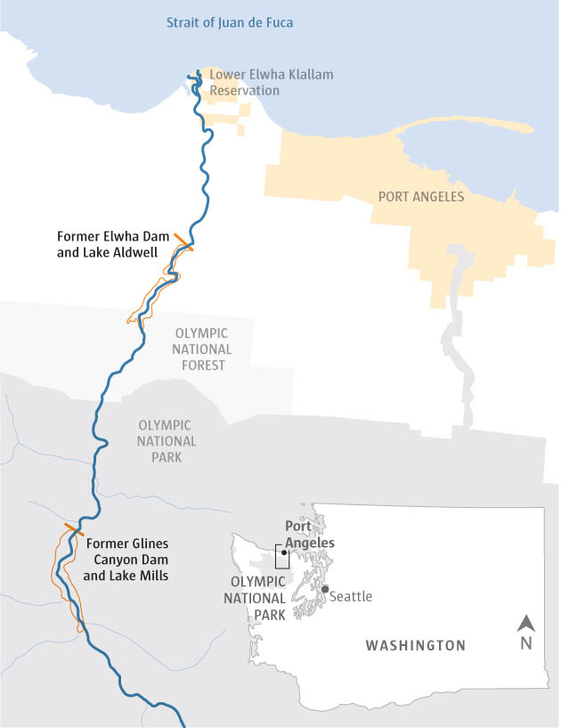
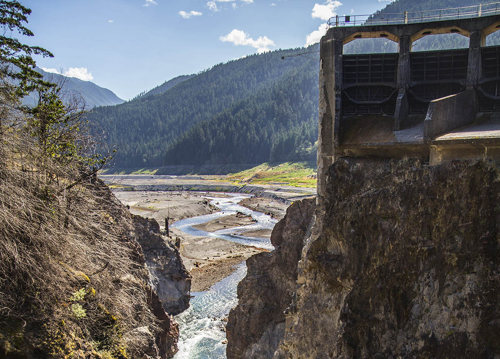
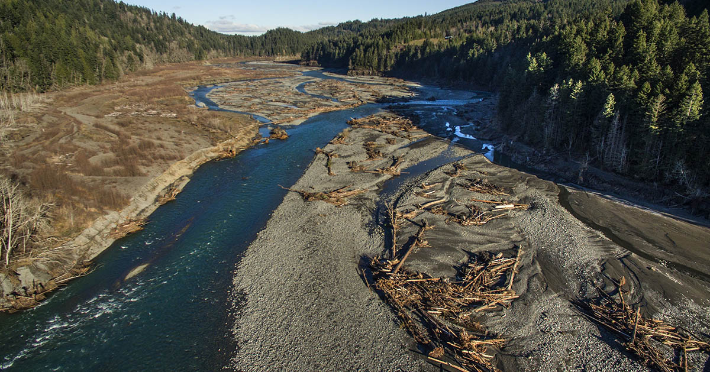
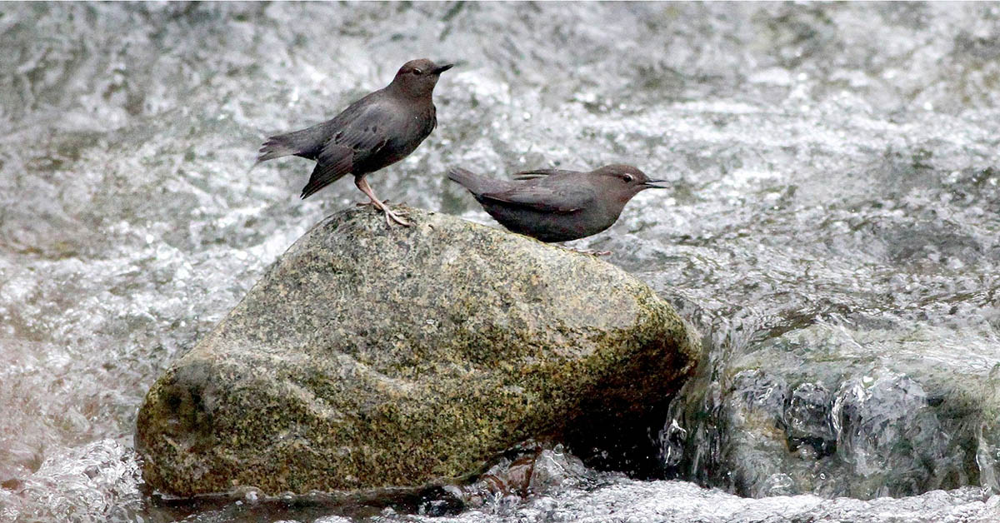
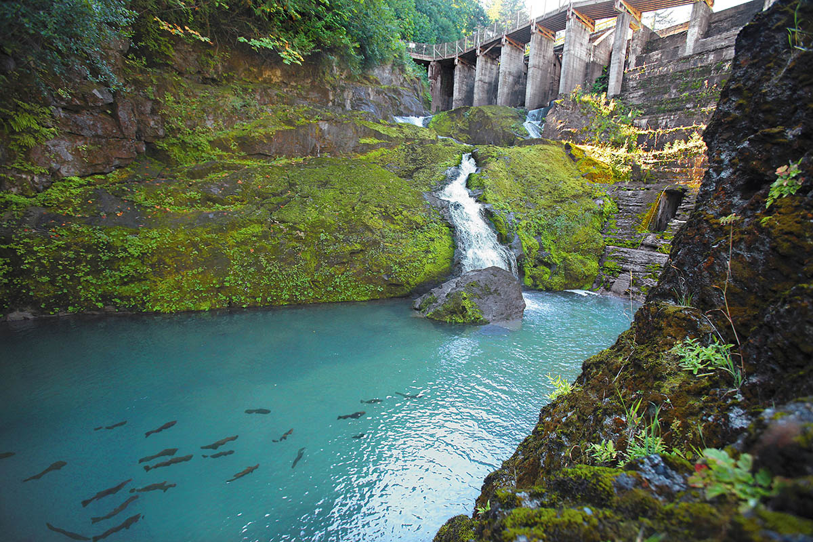
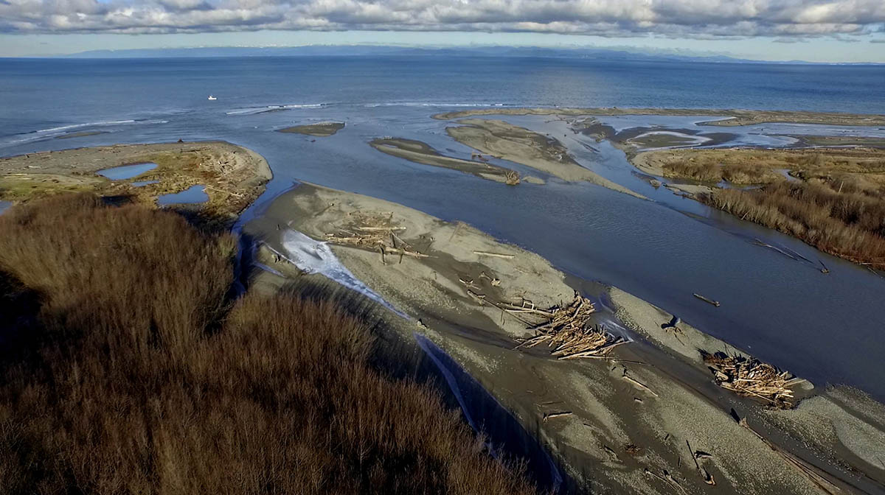

<%= markdown.intro %>
Upper river
Big wood on the move
Middle river
Lower river's resurgence

In this 2010 photo adult Chinook salmon are blocked in their journey upriver by Elwha Dam, built five miles from the river mouth with no fish passage. Even after 100 years they persisted, circling at the face of the dam every spawning season, trying to get upstream.
At the mouth of the Elwha
Originally published February 13, 2016
Lynda V. Mapes: 206-464-2515 or lmapes@seattletimes.com